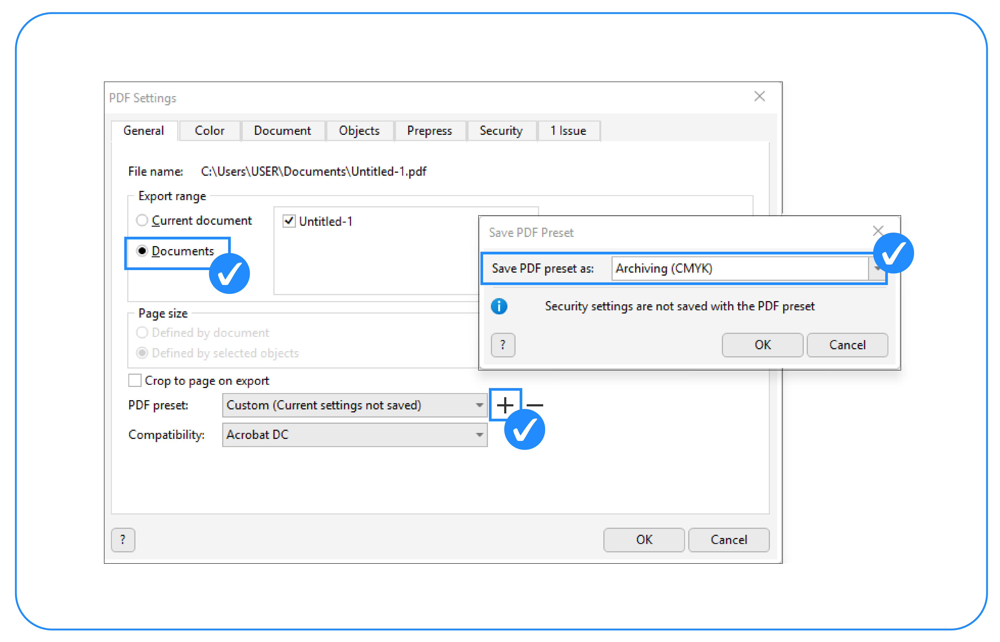
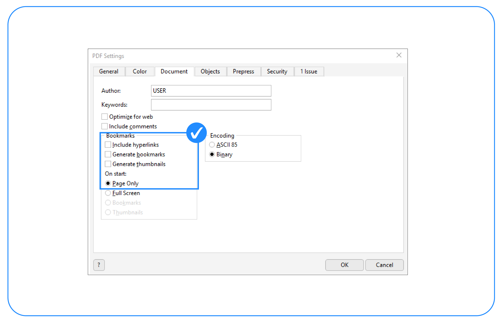
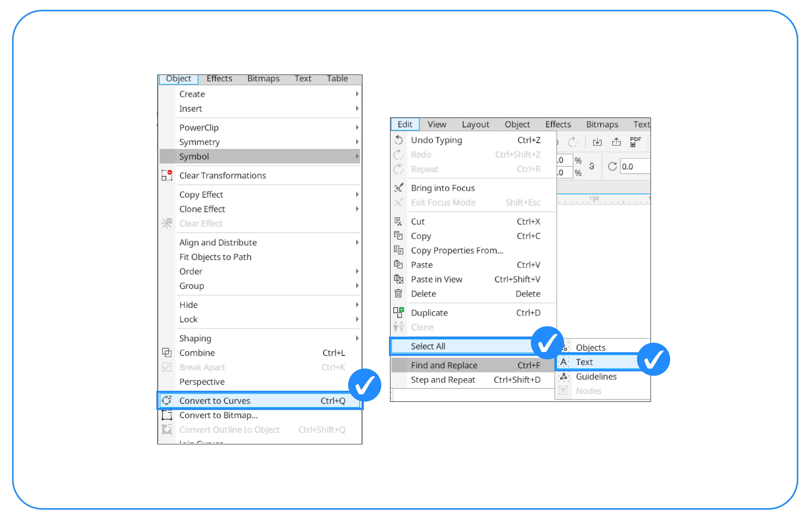
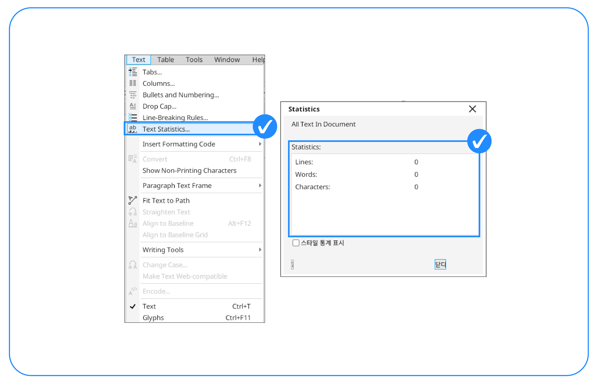
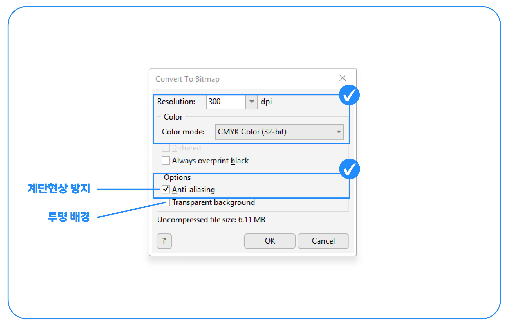
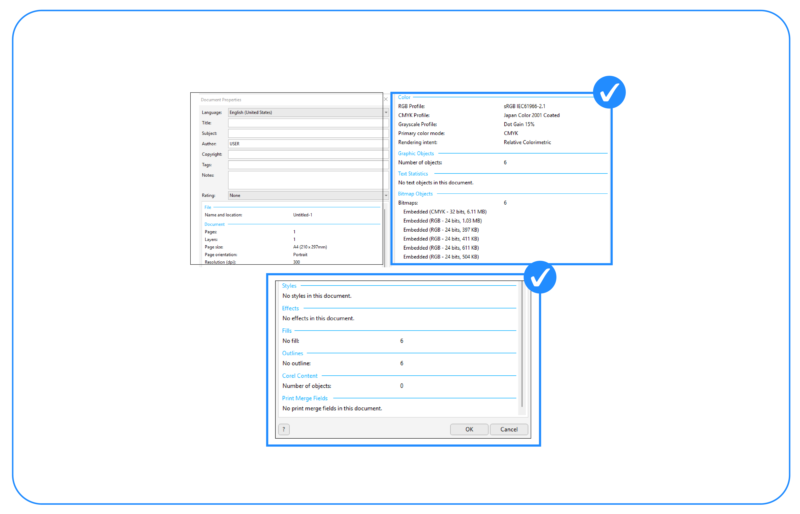

코렐드로우 작업가이드
- 인쇄할 파일은 모두 어도비 일러스트에서 작업해주시기 바랍니다. (어도비 일러스트 또는 PDF로 저장해주세요.)
- 프로그램 버전은 2024를 기준으로 작업하였습니다. 버전은 CS6버전으로 하위 조정해 보내주세요.
- 주문하신 데이터 수정은 불가능합니다. 작업가이드 확인 후 데이터를 업로드해 주세요.
- 포함이 되지 않은 이미지 혹은 변환하지 않은 서체로 인해 발생된 인쇄오류는 당사에서 책임질 수 없습니다.
01
파일 저장 방법
-

- 색상은 CMYK 모드로 설정하고 해상도는 300dpi로 설정해주세요.
-

- PDF로 저장할때 일반에서 archiving (cmyk)로 설정해주세요.
-

- 색상탭 설정하기. (위와같이 설정해주세요.)
-

- 문서탭 설정하기. (위와같이 설정해주세요.)
-

- 개체탭 설정하기. (위와같이 설정해주세요.)
-

- 저장할때 인쇄용 PDF로 설정하고 저장해 주세요.
02
전처리 작업하기
-

- 사용한 모든서체는 윤곽선 처리 (도형으로 변환) 해주세요.
-

- 윤곽선 처리가 안된 서체가 있는지 확인해주세요.( 숫자가 0이면 처리완료)
-

- 비트맵으로 처리할때 계단현상 방지를 체크해주세요.(투명 배경으로 체크할 경우 투명효과로 인식할 수 있습니다.)
- 그림자효과, 무늬채움, 투명효과, 그라데이션 등 각종 효과는 모두 비트맵 처리를 해주세요.
-

-
파일에서 문서등록 정보를 켜서 확인합니다.
- 1. 그래픽개체-OLE개체가 확인되지 않음.
- 2. 텍스트 개체가 사용되지 않음.
- 3. 비트맵 개체는 그레이스케일, CMYK만 남아있음.
- 4. 효과가 사용되지 않음, 5. 채움과 외곽선은 그레이 또는 CMYK만 사용.
-
파일에서 문서등록 정보를 켜서 확인합니다.